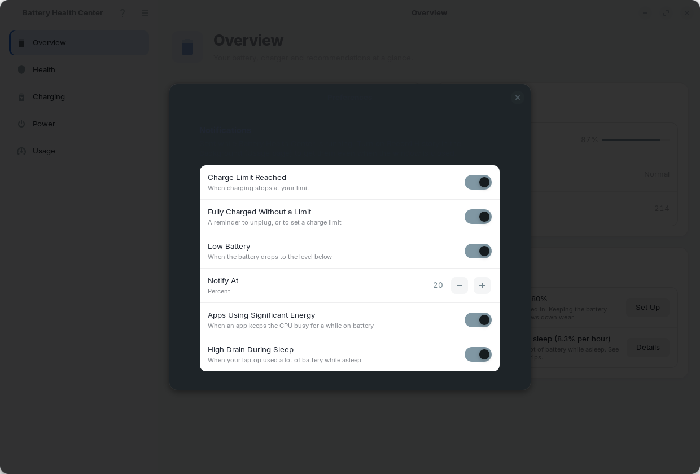

Notifications and preferences
Choose which notifications you get and when.
Open Preferences from the main menu or with Ctrl+, to choose which notifications you get. Everything else in the app is on its own page.

Notifications
Notifications are sent while Battery Health Center is running. Turn on Record History in the Background on the Usage page to get them even when the window is closed. All of them are on by default; turn off any you do not want.
| Notification | When you get it |
|---|---|
| Charge Limit Reached | Charging stops at your limit: "Charged to 80%. Charging has stopped at your limit to protect the battery." |
| Fully Charged Without a Limit | The battery is full and no limit is set: a reminder to unplug, or to set a charge limit to slow wear. |
| Low Battery | The battery drops to the Notify At level (20% by default) and you are not charging. It adds the time remaining when it knows it. |
| Apps Using Significant Energy | An app keeps the CPU very busy for a couple of minutes while you are on battery. Quit it if you are not using it. |
| High Drain During Sleep | The laptop used a lot of battery while asleep (over 2% per hour): "Your laptop used 7% in 51 min asleep (8.3% per hour)." |
Clicking a notification opens, or raises, the app window.